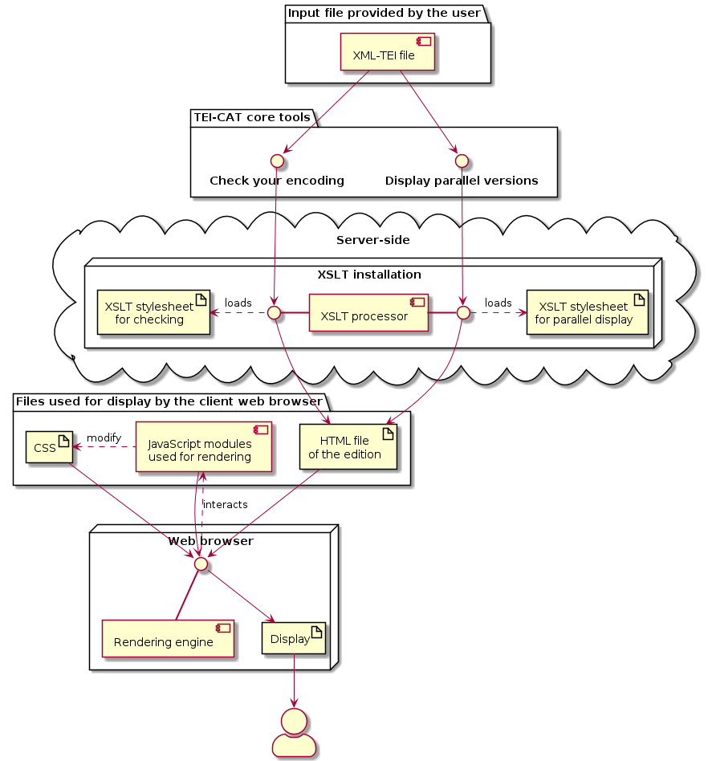
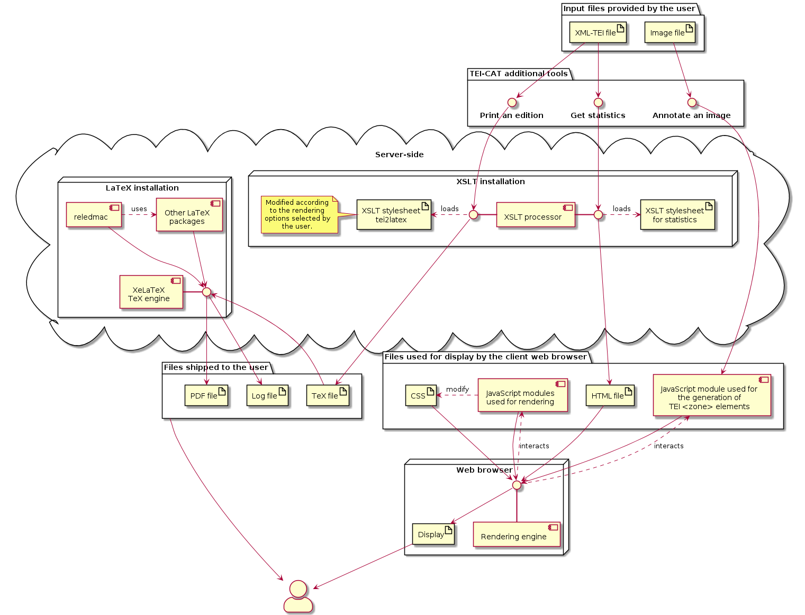
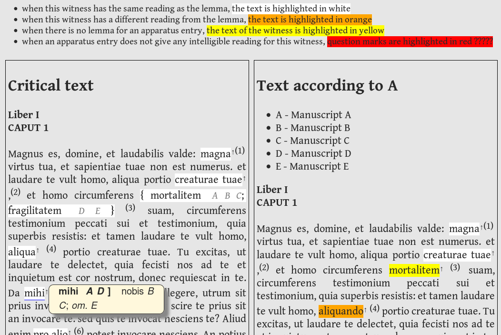
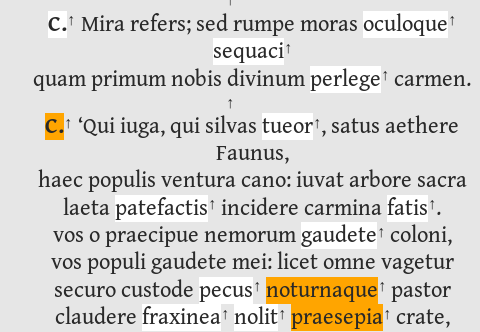
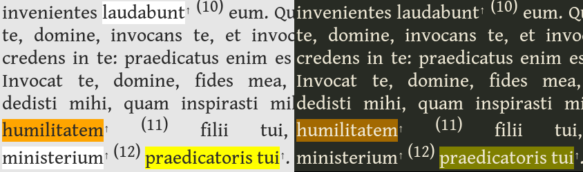
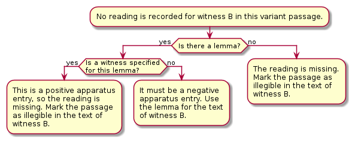

TEI Critical Apparatus Toolbox: Web-based tools for ongoing XML-TEI editions
Table of Contents
Abstract
Despite the flexibility that a TEI-based workflow offers for preparing editions based on collating several manuscripts, textual scholars working with XML-TEI edition files face a lack of domain-specific auxiliary tools. The TEI-CAT partially fills this gap by providing interfaces for visualizing the transcription of different manuscripts and for exploring the encoded variations and detecting common mistakes. While not properly supporting several types of textual variation and editorial intervention, these tools satisfy most of the needs usually arising during transcription and collation. The image annotation tool complements them by allowing users to generate TEI-compliant code. This tool very flexibly describes or comments on facsimile layout and content and thus is particularly helpful in preparing digital editions. Finally, the PDF-via-LaTeX exporting facility extends the scope of the toolbox towards traditional paper-based publishing, which often remains an editor’s ultimate goal. However, this tool requires adopting specific encoding practices, which are not made explicit and may not match the user’s choices; its output needs manual modifications in some cases. Together, these tools partially illustrate how the XML-TEI format can be used to prepare critical editions. They constitute an important step towards creating a TEI-based digital environment in this field.
General presentation of the TEI-CAT
Intellectual and practical scope
Regardless of their purpose and method, scholars preparing critical editions (whether “Lachmannian”, “Bedierist” or focused on the study of textual tradition) often have to register, summarize and account for textual variations across several manuscripts and citations. To date, two approaches have been prevalent. The first one involves entering variations in a collation table, either in a notebook or a spreadsheet, and manually redacting the critical text and the critical apparatuses with a word processor or in a TeX file. The second approach involves using specialized software1 that provides a unified interface and various auxiliary tools in order to support the editing process from transcribing to exporting the definitive files.
Such all-in-one applications have undeniable advantages. However, apart from TUSTEP (Universität Tübingen 1966–2020), which includes a general-purpose text editor and a full scripting language,2 most applications comprise a predefined set of features that the user can hardly extend and that complicate exchanging data with other software — at best, users can export their work for further processing with another software, whose output cannot be reimported and reworked without losing information.3 For instance, Pinche (2021) relies on the annotation of places, personal names and punctuation marks in the edited text in a detailed and structured way. Other examples involve linguistic tagging or describing the shape of letters and abbreviations. This limitation requires performing such tasks after establishing the critical text, which is not always optimal. A workflow based on a TEI-XML encoded file (as described in Andrews 2009, 34–74) is highly suited to addressing such needs.
When using the TEI (Text Encoding Initiative) encoding standard (TEI Consortium 2021)4, which addresses a wide range of needs and provides extension and specialization mechanisms, scholars are virtually unlimited in determining the data structure of their edition file. This is the case because XML-TEI files only contain structured information. As such, they are not meant to be consulted directly by readers but processed by an external programme to produce, for instance, word processor files (to be sent to a publisher), electronic editions (displayed in a web browser), or even work files (e. g. tables containing all variant readings). XSLT (Kay 2017), a language designed to perform transformations on XML files with the help of stylesheets, is often used to that end (for an example, see Vaughan 2021). Separating the recording of variants and the redaction of apparatus entries, which is delegated to further processing (in contrast, notably, to CTE, Hagel 1997–2021), also ensures a homogeneous syntax in the critical apparatus (see code example 1) and permits its adaptation to the publisher’s requirements by modifying the transformation stylesheet. On the one hand, this requires time and programming skills, but on the other it enables recording a lot of information in a single XML file, only part of which will be used and preserved in every output.
However, while users might appreciate being able to write custom programmes to address specific needs, they benefit from performing common tasks with existing general-purpose tools. Unfortunately, few applications are directed towards critical editing based on XML-TEI and mostly provide interfaces for visualizing achieved editions.5 What distinguishes the TEI-CAT is that it provides a set of tools for work in progress. Moreover, contrary to publication software, the two main tools in this toolbox deal almost exclusively with textual variation, which most editors will likely encode in the same way,6 and simply ignore more project-specific features. Overall, then, the TEI-CAT truly contributes to developing common tools for common tasks.
Development of the TEI-CAT tools
The TEI-CAT (originally called TEI Critical Edition Toolbox) was opened for testing in June 2014.7 It has been programmed almost entirely by Marjorie Burghart, a medieval Latin philologist, who felt that the existing tools for interacting with XML-TEI editions lacked either sufficient support for the TEI “Critical Apparatus” module or features required to work on ongoing projects (e. g. automatic error detection). To overcome this shortcoming, Burghart decided to make available the scripts that she had written for herself (Burghart 2019). This initiative has been part of her broader commitment to making XML-TEI based solutions for critical editing more widely known and accessible. As a member of the TEI Consortium’s Critical Apparatus Workgroup, she has also contributed to improving standards. She has also helped create an online course and a free ebook on encoding critical editions with the TEI (Burghart, Cummings, and Pierazzo 2017).
Originally, the TEI-CAT consisted of two interfaces, which still exist today. Besides conforming to XML and TEI specifications, Check your encoding also helps screen apparatus entries for e. g. the absence of a required witness or the mention of two readings for the same witness. Display parallel versions exhibits the critical text and the texts of selected witnesses, thus facilitating the verification of collation against every manuscript and the examination of variants. Both interfaces insert anchors in the displayed text that make the individual apparatus entries accessible. What follows refers to these interfaces as the core tools of the TEI-CAT, not only because they were released first, but also because they match the needs of all editors using TEI.
The TEI-CAT has benefited from scholars and students collaborating on its development during two hackathons and a training week in 2015 and 2016. Some new features have been worked on at that time (Burghart 2019). Whereas these have never been released, Burghart has published three additional tools. (1) A tool for generating TEI <zone> elements from an image was added in 2017, designed by Chris Sparks (Sparks 2017). Two others followed in 2018: (2) an interface for generating a traditional print edition from an XML-TEI file; (3) a tool for displaying statistics about the XML elements used. In September 2021, a new version of
Annotate an image was released (Sparks and Vaňková 2017–2019). As this timeline suggests, and as Burghart has confirmed, project changes result mainly from user suggestions, contributions and requests.
Architecture and infrastructure
 
Usually, all tools return their output after some seconds. They can even handle rather long and complex editions,9 provided that not too many witnesses are selected at a time. The printing tool may take longer, depending on the time needed by LaTeX to compile the PDF file.
Evaluation
Methodology
Given that the core tools share a similar interface and common features (e. g. the generation of the critical text), I review them together. To that end, I have used the test file provided by Marjorie Burghart,10 which documents part of the behaviour of the core tools. However, being a sample file rather than a comprehensive test input, it does not address some usual textual phenomena (e. g. blank spaces, duplication of words, transposition of whole segments). The same could be said of a handful of frequent encoding features such as the presence of XML elements (e. g. <abbr>) in a <lem> element. To supplement it, I have written a set of additional tests.
All the test files, along with a list of the tested features and the detailed results, can be retrieved from Zenodo. 11 For each set of tools, I first comment on the interface and then synthesize the outcome of my tests.
Core tools: Checking and visualizing ongoing editions
The interface is simple, intuitive and well-described on the help page. The user uploads the XML-TEI file. Then, in Display parallel versions, he or she selects the texts to be compared (the critical text and/or one or more witnesses). Texts are displayed side by side (see fig. 3). Every variation is marked by an anchor, which can be clicked to display the corresponding apparatus entry. Editorial notes (in <note> elements) are rendered as well. In the witness text, passages containing variant readings are highlighted in different colours according to the relationship between the displayed text and the lemma.
Hence, Display parallel versions addresses the needs of any editor working with several manuscripts. Indeed, it is easier to check transcription accuracy from a continuous text than from the XML-TEI file or even from a collation table. Variant highlighting provides a general idea of the differences between manuscripts before studying them in greater detail and helps study their peculiarities.
In Check your encoding, only the critical text appears, exactly as in Display parallel versions. The user can dynamically select which encoding anomalies or broader features should be highlighted. Especially appreciated is the ability to highlight those apparatus entries in which some witnesses are missing or recorded twice: these anomalies appear quite frequently, often due to a siglum having been mistyped. Other most common mistakes are tracked too, such as forgetting to define the critical text in a variant location.
  
The interface could provide additional information. For instance, according to the help page, “in the toolbox, you will have the option of showing or hiding the page breaks, either all of them, or for a particular witness.” However, the required checkboxes only appear in Check your encoding. In Display parallel versions, page breaks in manuscripts are currently recorded in the HTML file produced by the TEI-CAT as spans with class .msPb but are not displayed. Furthermore, the <said> element, which delimits direct or reported speech, is currently not supported. Since identifying such passages often relies on the editor’s interpretation, highlighting them at least in the critical text would help review the choices that have been made in these respects.

Regarding the recognition of textual features, only two cases documented in the sample file provided by the author are poorly handled. Variants inside a group (<rdgGrp> element) are marked as illegible in the corresponding witness texts. When a given witness is attributed to both the lemma and a variant reading in the same passage, its text in parallel display reproduces that of the lemma instead of indicating an error.
Conversely, the core tools fail the majority of the supplementary tests. This comes as no surprise, since these tests mostly concern features not stated as supported by the documentation, namely, the help page and Burghart’s test file. Supported undocumented features include the correct display of right-to-left alphabets, XML elements inside a <lem>, additions, transposed text segments (although the apparatus yields strange results), scribal abbreviations in the lemma or outside a variant location. Unsupported or buggy features include the indication of blank spaces, duplication of expressions or, among possible mistakes, the use of a witness in contexts where this should remain unmentioned (e. g. in a lacuna). However, these shortcomings do not prevent using these tools, since at least the displayed text is generally correct or understandable.
Additional tools: Annotating an image and generating a traditional PDF edition
The basic version of Annotate an image lets the user swiftly and easily draw zones on an image and export their coordinates in TEI format. However, it always displays the image in full size, which can be problematic with high-quality reproductions. Nor can the zone be adjusted once drawn. The basic version has been superseded by the new version, which enables scaling images, as well as moving and deleting zones individually. The added features allow categorizing and annotating zones. The help message is very clear and comprehensive. Although I have not used this tool in real projects, it would seem very helpful for those wishing to include annotations linked to manuscript images in their XML-TEI file (e. g. to publish an electronic edition displaying interactive images alongside the text).
At first sight, Print an edition looks very attractive. Besides relieving editors of the burden of programming a very complex XSLT stylesheet, the TEI-to-LaTeX transformation provides numerous options for page layout, the formatting of the critical apparatus, the indices, etc. It supports a two-level apparatus containing variant readings and sources. Taken together, the sample file and the indications in the customization interface provide much information about the supported encoding. Those needing further customization can download and modify the XSLT stylesheet (used to process the XML file). This, of course, requires understanding both XSLT and LaTeX, especially reledmac.
However, it supports neither variant locations nested in variant readings nor explicitly encoded duplications nor transposed spans of text (i. e. neither iter. nor transp. can be generated in the critical apparatus: the entire contents of each reading is written out instead). Besides, very long chunks of complicated and sometimes duplicated code make the default XSLT stylesheet difficult to read and modify. Nevertheless, users dissatisfied with the output can use the generated LaTeX file as a basis and modify it by hand. Even those who wish to implement their own stylesheets may benefit from studying Burghart’s sheet.
Although perhaps beyond the scope of a single-person project, Print an edition might serve to more broadly reflect on how to most practically express traditional paper-based editions in form of an XML-TEI model, ideally embodied in a constraining RNG schema. A consensual, well-designed set of conventions with explicit theoretical, albeit traditional foundations, would be suitable for many projects, and would prevent their authors from reinventing the wheel. Such a specification could also be appropriated by other editing and publishing software in the field of textual criticism providing XML-TEI output (Pierazzo 2019; this approach is exemplified by Camps 2016).
Admittedly, programming a more feature-rich and yet reliable set of stylesheets would be a fairly complex and difficult endeavour. However, some design decisions could make this somewhat easier. First, a comprehensive test suite would permit tracking the progress made in supporting the designed model and ensure that no modification introduces bugs. Secondly, the respective responsibilities of the XSLT stylesheet and of LaTeX macros could be better defined. Currently, for a PDF output similar to fig. 7, XSLT generates the type of code as shown in example 2, which mixes structural commands (e. g. \edtext or \pstart ... \pend) and formatting instructions (e. g. \vspace).
This could be made more manageable by using high-level structural commands (see code example 3):13
These commands could be defined in a separate package file as shown in example 4.
Conceivably, such a LaTeX package could provide some customization options. These could be set in a file generated by the XSLT processor and imported by the main LaTeX file. This would make the XSLT stylesheet more manageable, since it would have to deal only with structure, not with formatting. Later, this would also make it easier to introduce support for ekdosis (Alessi 2020–2021). On the XSLT side, this would only require some additions, to reflect new features, with most of the implementation being done in the package. Needless to say, these are prospective considerations, not actual requirements for TEI-CAT.
Conclusion
The TEI-CAT is an important step towards creating a digital ecosystem for critical editing based on XML-TEI. By displaying the recorded text of every witness, Display parallel versions enables checking conformity to the manuscript. It also enables the user to visualize apparatus entries. Check your encoding points out possible mistakes or typos in the encoding. Although they do not replace XML editors or the potential use of transcription and collation software, these tools can make transcribing, collating and editing more efficient and more reliable. In sum, they provide the editor with views that help control and interpret data. Get statistics, which provides information about XML element use and word count, fits in well with this perspective.
Annotate an image and Print an edition go beyond the production of textual data. The former considerably facilitates linking text and image and as such is oriented more towards producing a digital edition. The latter is modeled on traditional print editions. Users who do not follow the exact same encoding model and feel that some features are missing can modify the stylesheet or rework its LaTeX output. They may thus still gain time compared to writing their own stylesheets from scratch.
On the whole, Marjorie Burghart’s work can be characterized as a pioneering general-purpose toolbox that contributes to reducing the need for programming project-specific tools while setting up TEI-based editing workflows. One can only be grateful to her for making her personal scripts available. Yet, beyond TEI-CAT, significant work remains to be done to create a complete environment. First, in reconstructing the transmission history and the critical text, it would be helpful to be able to explore textual variations in tabular form, with support for sorting, weighting and generating reports. Secondly, unified interfaces for exporting to PDF, DOCX, ODT or HTML would greatly facilitate the publication process. A specialized XML editor, or specific configurations for existing ones, could also make complex source files more manageable.
To these ends, some existing components could be built on, such as the TEI processing model implemented in the TEI Publisher (2016–2021) or the latter’s annotation editor. However, creating an environment of interoperable software is likely to be hindered, at least for the moment, by the absence of a recognized standard about how to express textual variation using the rich and rather permissive TEI vocabulary. Marjorie Burghart and her TEI-CAT might well play a role in this respect in the future, either directly or as a source of inspiration.
Bibliography
- Alessi, Robert. 2020–2021. ekdosis – Typesetting TEI-XML compliant Critical Editions. LaTeX. https://web.archive.org/web/20221111115050/https://www.ctan.org/pkg/ekdosis.
- Andrews, Tara L. 2009. “Prolegomena to a Critical Edition of the Chronicle of Matthew of Edessa, with a Discussion of Computer-Aided Methods Used to Edit the Text.” PhD Thesis, Oxford: Oxford University. https://web.archive.org/web/20221111115125/https://ora.ox.ac.uk/objects/uuid:67ea947c-e3fc-4363-a289-c345e61eb2eb.
- Burghart, Marjorie. 2019. “The TEI Critical Apparatus Toolbox: Empowering Textual Scholars Through Display, Control, and Comparison Features.” Journal of the Text Encoding Initiative 10. https://doi.org/10.4000/jtei.1520.
- Burghart, Marjorie, James Cummings, and Elena Pierazzo. 2017. Creating a Digital Scholarly Edition with the Text Encoding Initiative. Edited by Marjorie Burghart. DEMM. https://web.archive.org/web/20210816161355/https://www.digitalmanuscripts.eu/?page_id=648.
- Camps, Jean-Baptiste. 2016. “La Chanson d’Otinel : édition complète du corpus manuscrit et prolégomènes à l’édition critique.” Thèse de doctorat, Paris: Université Paris-Sorbonne (Paris IV). https://web.archive.org/web/20221111115306/https://halshs.archives-ouvertes.fr/tel-01664932.
- Dumont, Bastien. 2021. Tests for the TEI-CAT (version 1.1). https://doi.org/10.5281/zenodo.5270343.
- Dunning, Andrew. 2020. “Reledmac. Typesetting Technology-Independent Critical Editions with LaTeX.” RIDE 11. https://doi.org/10.18716/ride.a.11.1.
- Hagel, Stephan. 1997–2021. Classical Text Editor (version 10.4). Windows. Austrian Academy of Sciences, Corpus Scriptorum Ecclesiasticorum Latinorum. https://web.archive.org/web/20221104100713/https://cte.oeaw.ac.at/.
- Eberhard Karls Universität Tübingen. 1966–2020. Tübinger System von Textverarbeitungs-Programmen. Linux, Mac OS, Raspbian, Windows. Universität Tübingen, Zentrum für Datenverarbeitung. https://web.archive.org/web/20221008175234/http://www.tustep.uni-tuebingen.de/.
- Kay, Michael, ed. 2017. “XSL Transformations (XSLT) Version 3.0.” W3C. June 8, 2017. https://www.w3.org/TR/xslt-30/.
- Moureau, Sébastien. 2021. ChrysoCollate (version 1.0). Browser-based. Université catholique de Louvain. https://web.archive.org/web/20221111120045/https://cental.uclouvain.be/chrysocollate/.
- Pierazzo, Elena. 2019. “What Future for Digital Scholarly Editions? From Haute Couture to Prêt-à-Porter.” International Journal of Digital Humanities 1: 209–20. https://doi.org/10.1007/s42803-019-00019-3.
- Pinche, Ariane. 2021. “Édition nativement numérique du recueil hagiographique Li Seint Confessor de Wauchier de Denain d’après le manuscrit fr. 412 de la Bibliothèque nationale de France.” Thèse de doctorat, Lyon: Université Jean Moulin (Lyon 3). https://web.archive.org/web/20221111120146/https://www.theses.fr/2021LYSE3019.
- Rosselli Del Turco, Roberto, ed. 2016–2021. Edition Visualization Technology (version Beta2). Node.js. EVT Team. https://web.archive.org/web/20221013152203/http://evt.labcd.unipi.it/.
- Rouquette, Maïeul. 2011–2021. reledmac – Typeset scholarly editions. LaTeX. https://web.archive.org/web/20221111120343/https://www.ctan.org/pkg/reledmac.
- Schreibman, Susan, Karolina Badzmierowska, and Roman Bleier. 2016. Versioning Machine (version 5.0). Browser-based. https://web.archive.org/web/20221111120450/http://v-machine.org/.
- Sparks, Chris. 2017. TEI Zoner. Browser-based. https://github.com/sparkyc84/tei-zoner.
- Sparks, Chris, and Marie Vaňková. 2017–2019. tei-zoner-angular. Browser-based. https://github.com/Elfina1039/tei-zoner-angular.
- TEI Consortium. 2021. “TEI P5: Guidelines for Electronic Text Encoding and Interchange.” Text Encoding Initiative. 2021. https://tei-c.org/release/doc/tei-p5-doc/en/html/index.html.
- TEI Publisher: The Instant Publishing Toolbox (version 7.1). 2016–2021. Java. e-editiones.org. https://web.archive.org/web/20221110134226/https://teipublisher.com/index.html.
- Vaughan, Nicolás. 2021. “TEI-XML to LaTeX Workflow: Issues and Lessons.” TUGboat 42 (2): 174–79. https://doi.org/10.47397/tb/42-2/tb131vaughan-tei.
Notes
- Among others: TUSTEP (Universität Tübingen 1966–2020), Classical Text Editor (CTE, Hagel 1997–2021) and ChrysoCollate (Moureau 2021). ↑
- See Christian Griesinger’s review in RIDE 11. ↑
- CTE works around this limitation by letting the user insert arbitrary TEI-XML tags in the text. However, to be exportable to TEI-XML, the apparatus has to be redacted in a machine-readable way, which is generally incompatible with the requirements of a print edition: for instance, following the manual, expressions indicating nested variant locations such as deus dixit] dominus (christus B) dicit ABC will not be recognized. The practical consequence is that users must choose between print and TEI output. ↑
- Especially the modules devoted to the manuscript description, the representation of primary sources and the critical apparatus. ↑
- The most prominent ones are Edition Visualization Technology (EVT) and the Versioning Machine (Schreibman et al. 2016). TEI Publisher (2016–2021) has a broader scope. ↑
- Only parallel segmentation is supported for linking the critical text with the variations. However, the other methods provided by the TEI are less broadly used. ↑
- https://web.archive.org/web/20210816160022/https://tei-c.org/2014/06/10/tei-critical-edition-toolbox/ ↑
- The ekdosis package has since been released (Alessi 2020–2021). ↑
- Such as this file. ↑
- Available at http://teicat.huma-num.fr/pseudo-edition-test-file.xml. A copy of the version available at the time of writing is included in the ZIP folder mentioned below. ↑
- I am very grateful to Marjorie Burghart, to whom I sent this folder, for kindly pointing out some errors in my test files. Please note that, as the result of possible work on TEI-CAT, the situation described below may change in the near future. ↑
-
Paragraphs are surrounded by
\pstartand\pend. The critical text in variant locations constitutes the first argument of\edtext. The second argument is composed of the lemma, followed by the literal text of the apparatus entry (\Afootnote).\vspaceintroduces a gap before the next paragraph.\Bfootnotecontains an entry in the apparatus fontium. ↑ - The code examples are merely illustrative. ↑
-
Paragraphs are now set as arguments of
\edparagraph, whose definition in Code example 4 includes both the\pstart...\pendpair and\vspace. The apparatuses are more clearly distinguished by the use of\variantLocationand\citing. Instead of formatting the critical apparatus directly, the variants are indicated by\variant, which takes the variant reading and the list of the corresponding witnesses as arguments. Italics and commas are defined in Code example 4. Note that, in this example, the second argument of\variantLocationis empty: Code example 4 shows that it needs to be set only if the lemma in the apparatus differs from the main text. ↑ - The new commands used in Code example 3 are translated into their reledmac equivalents, albeit with some tweaks: for instance, in each critical apparatus entry, a comma and a space are inserted before all variant readings but the first. Using this kind of definition guarantees that all apparatus entries are formatted according to the same rules, which can then be modified uniformly. ↑
@article{teicat,
author = {Dumont, Bastien},
title = {TEI Critical Apparatus Toolbox: Web-based tools for ongoing XML-TEI editions},
journal = {RIDE – A review journal for digital editions and resources},
number = {15},
year = {2022},
doi = {10.18716/ride.a.15.4},
url = {https://doi.org/10.18716/ride.a.15.4},
}TY - JOUR
AU - Dumont, Bastien
TI - TEI Critical Apparatus Toolbox: Web-based tools for ongoing XML-TEI editions
T2 - RIDE – A review journal for digital editions and resources
IS - 15
PY - 2022
DA - 2022/12
DO - 10.18716/ride.a.15.4
UR - https://doi.org/10.18716/ride.a.15.4
PB - Institut für Dokumentologie und Editorik e.V.
LA - en
ER - Dumont, B. (2022). TEI Critical Apparatus Toolbox: Web-based tools for ongoing XML-TEI editions. RIDE – A review journal for digital editions and resources, (15). https://doi.org/10.18716/ride.a.15.4Dumont, Bastien. "TEI Critical Apparatus Toolbox: Web-based tools for ongoing XML-TEI editions." RIDE – A review journal for digital editions and resources, no. 15, 2022. https://doi.org/10.18716/ride.a.15.4.Dumont, Bastien. "TEI Critical Apparatus Toolbox: Web-based tools for ongoing XML-TEI editions." RIDE – A review journal for digital editions and resources, no. 15 (2022). https://doi.org/10.18716/ride.a.15.4.